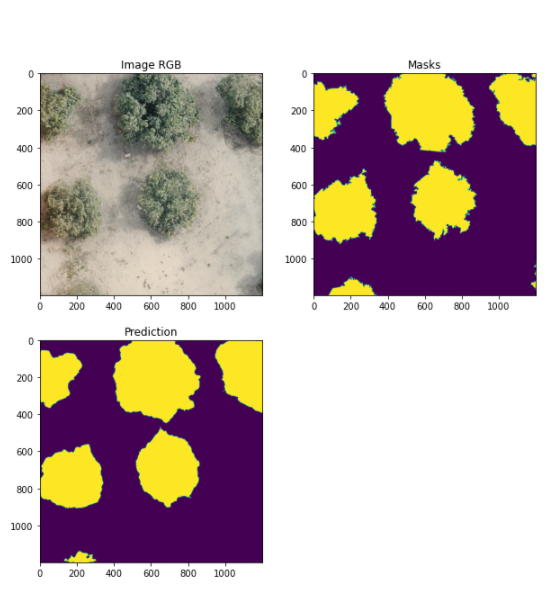

KIHT: Kaligo-based Intelligent Handwriting Teacher
KIHT project overview
The KIHT
project has the objective of creating an intelligent learning tool known as the "DigiPen," which is an electronic pen designed for digitized handwriting. STABILO, in collaboration with the German KIT institute, is responsible for developing the hardware of the electronic DigiPen. The KIT institute is focused on integrating artificial intelligence algorithms into the device.
The IRISA IntuiDoc team is in charge of designing and developing the deep learning AI system that can reconstruct online handwriting patterns from the data captured by the DigiPen's kinematic sensors, including accelerometers, gyroscopes, magnetometers, and force sensors.
My contribution as an IRISA member
My work has focused mainly on the pre-processing chain for processing, synchronizing and labeling data (sensor and trajectory) to make it usable for deep neural network learning.
We collected a significant amount of data using the latest generation Digipen. The pre-processing chain has been finalized. It is based on automatic alignment between ground truth (trajectory captured on digital tablet) and DigiPen sensor data (kinematic sensor) using the Dynamic Time Warping (DTW) algorithm.
A neural network architecture based on Temporal Convolutional Networks (TCN) was designed and its hyperparameters optimized, and an evaluation based on Fréchet distance was implemented for optimum analysis of the results.
Related papers
Article in an international peer-reviewed journal (+ presentation at ICDAR 2023 – Journal Track)
[1] Online handwriting trajectory reconstruction from kinematic sensors using temporal convolutional network. Wassim Swaileh, Florent Imbert, Yann Soullard, Romain Tavenard, Eric Anquetil, IJDAR (2023)
Communication at the SIFED symposium in France without proceeding
[2] Toward Deep neural network for pen trajectory reconstruction from kinematic sensors, Florent Imbert, Eric Anquetil, Romain Tavenard, Yann Soullard, Wassim Swaileh, Symposium International Francophone sur l’Ecrit et le Document (SIFED’2022), Oct 2022, Rennes, France
Conference poster at the SIFED symposium in France without proceeding
[3] Adaptation de domaine pour la reconstruction de la trajectoire du stylo à partir de capteurs cinématiques, Florent Imbert, Eric Anquetil, Romain Tavenard, Yann Soullard, Symposium International Francophone sur l’Ecrit et le Document (SIFED’2023), Juin 2023, Paris, France
Technical Paper)
[4] Towards the on-device Handwriting Trajectory Reconstruction of the Sensor Enhanced Pen. Alexey Serdyuk, Fabian Kreß, Micha Hiegle, Tanja Harbaum, Jürgen Becker, et al.. IEEE 9th World Forum on Internet of Things, Oct 2023, Aveiro, Portugal.
[5] KIHT: Kaligo-based Intelligent Handwriting Teacher. Tanja Harbaum, Alexey Serdyuk, Fabian Kreß, Tim Hamann, Jens Barth, et al.. DATE 2024, Mar 2024, Valencia, Spain.
RemoteDeepMango: Deep Learning for the detection, delimitation and discrimination of trees and
from very high spatial resolution images.
RemoteDeepMango project overview
Agricultural development in developing countries is crucial for poverty reduction and food security. This development involves deploying innovative digital solutions to acquire information on agricultural and cropping systems. In West Africa, understanding and modeling fruit chains is challenging due to a lack of suitable methods and tools for characterizing fruit tree-based systems, which are often complex (e.g., agroforestry systems).
The RemoteDeepMango project aims to acquire data on mango production at the orchard level to inform regional production models. This will provide industry players with accurate and reliable information to meet their needs. The project requires the delimitation and classification of trees and orchards to provide additional input data to these regional models.
My contribution as an CIRAD member
As a CIRAD member, my work has primarily focused on implementing deep learning neural classification and segmentation methods to produce cartographic information. The goal was to identify and map individual mango trees, whether isolated or in orchards, to improve the accuracy of regional production models.
